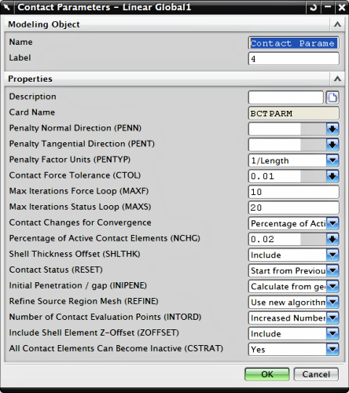

除了使用面对面接触对话框定义的参数，还可以在解算方案对话框的接触选项卡中定义接触解算方案参数。
如果您正在使用 Nastran 作为求解器，可以创建一个接触参数建模对象以定义其它参数来控制接触算法，然后使用位于解算方案对话框中工况控制选项卡的全局接触参数选项以将接触参数建模对象包含到解算方案中。
接触参数建模对象与 Nastran BCTPARM 膨胀数据条目相对应。
默认接触参数对于大部分分析都适用，但是，您可能需要修改解算方案属性以解决：
收敛和波动
奇异
